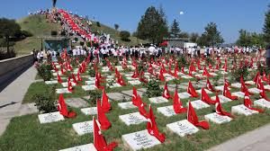
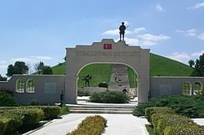

Kütahya ili Dumlupınar ilçesi sınırları içerisindeki Cafer Gazi Tepesindeki bu anıt ve şehitlik, Kurtuluş Savaşı’nda da önemli bir yere sahiptir, Dumlupınar. Kurtuluş Savaşı Başkomutan Meydan Muharebesi’ye birlikte 26 Ağustos 1922 günü Afyonkarahisar-Kocatepe’den başlamıştı. 30 Ağustos 1922 de Dumlupınar’da ise kahraman ordunun büyük zaferiyle sona ermişti. Dumlupınar şehitliği Kurtuluş Savaşı boyunca tüm cephelerde şehit düşen vatan evlatlarının ve Türk askerlerinin anısına Kültür ve Turizm Bakanlığı’nca yaptırılmıştı.


 "Kütahya"ya dönmek için basın
"Kütahya"ya dönmek için basın